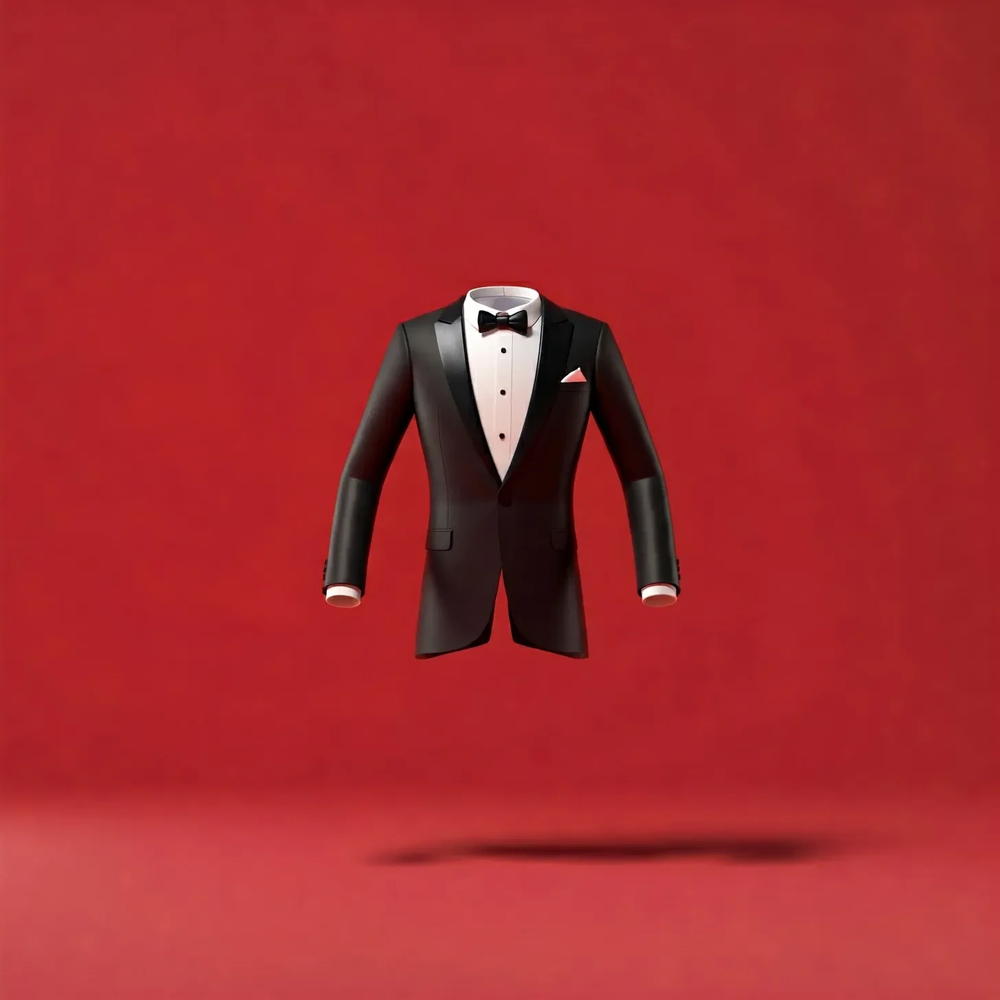

문 위의 종이 울렸지만, 들어온 것은 손님이 아니라 공중에 떠 있는 옷 가방이었다.
[The bell above the door chimed, but it wasn’t a customer who entered—it was a garment bag, floating in mid-air.]
에스테반은 눈을 깜빡이고, 눈을 비비고, 다시 깜빡였다. 옷 가방은 마치 인정받기를 기다리는 듯 부드럽게 흔들렸다. 그는 옷의 말을 들을 수 있는 기이한 능력을 가진 세탁소 주인으로 지내면서 이상한 일들을 많이 봤지만, 이건 정말 가관이었다.
[Esteban blinked, rubbed his eyes, and blinked again. The garment bag bobbed gently, as if waiting to be acknowledged. He’d seen some strange shit in his years as a dry cleaner with the uncanny ability to hear clothes speak, but this took the cake—and ate it too.]
“뭐하는 거야, 그렇게 멍하니 서 있지 말고,” 가방 안에서 웅얼거리는 목소리가 들려왔다. “지퍼 좀 열어줘, 자기야. 이 폴리에스터 감옥에서 질식할 것 같아!”
[“Well, don’t just stand there gawking,” a muffled voice came from inside the bag. “Unzip me, darling. I’m suffocating in this polyester prison!”]
에스테반은 망설이는 손가락으로 가방의 지퍼를 열었다. 멋진 턱시도가 튀어나왔고, 그 소매는 마치 큰 숨을 들이쉬는 것처럼 넓게 펼쳐졌다.
[With hesitant fingers, Esteban unzipped the bag. A dapper tuxedo burst forth, its sleeves stretching wide as if taking a big gulp of air.]
“아, 자유다!” 턱시도가 외쳤다. “말해 뭐해, 그 가방 안에 있는 건 마술사의 조수가 된 것 같았어. 온통 매듭투성이였다고!” 턱시도는 잠시 멈추고 웃음을 기다렸지만 아무도 웃지 않았다. “알겠어? 매듭? 마술사들이 사람들을 묶잖아?”
[“Ah, freedom!” the tux exclaimed. “I tell you, being in that bag was like being a magician’s assistant. I was in knots!” It paused, waiting for a laugh that didn’t come. “Get it? Knots? Because magicians tie people up?”]
에스테반은 신음을 내뱉었다. “굉장해, 코미디언이라. 월요일 아침부터 정말 필요한 게 이거였지.”
[Esteban groaned. “Great, a comedian. Just what I need on a Monday morning.”]
턱시도는 콧방귀를 뀌며 옷깃을 분개한 듯 펄럭였다. “내가 지난 결혼식에서 대박을 쳤다는 걸 알아야 해. 신부가 배꼽 잡고 웃었다고!”
[The tux huffed, its lapels flapping indignantly. “I’ll have you know I killed at my last wedding. The bride was in stitches!”]
“그게 신부가 ‘네, 하겠습니다'라고 말하기 전이었어, 아니면 후였어?” '세탁 대기’ 더미에서 낡은 티셔츠 한 장이 끼어들었다.
[“Was that before or after she said 'I do’?” a ratty t-shirt piped up from the 'to be washed’ pile.]
“자, 자,” 에스테반이 끼어들었다. 어떻게든 질서를 유지하려는 듯했다. “턱시도 씨, 우리 초라한 가게에 무슨 일로 오셨나요?”
[“Alright, alright,” Esteban interjected, trying to maintain some semblance of order. “Mr. Tux, what brings you to my humble shop?”]
턱시도는 가슴을 내밀었다. “내 말 잘 들어, 친구. 난 스파를 하러 왔다네. 약간의 스팀, 약간의 다림질, 그리고 당신이 관대하다면 멋진 풀 먹인 칼라도 좋겠어. 중요한 밤이 다가오고 있어서 날카롭게 보여야 한다고!”
[The tuxedo puffed out its chest. “I, my good man, am here for a spa day. A little steam, a little press, maybe a nice starch collar if you’re feeling generous. I’ve got a big night coming up, and I need to look sharp!”]
갓 다림질된 셔츠 행거에서 킥킥거리는 소리가 들려왔다. “날카롭다고? 네가 아무리 해봐야 버터도 자르지 못할 거야, 구식 펭귄 옷!”
[A snicker came from the rack of freshly pressed shirts. “Sharp? You couldn’t cut butter if you tried, you outdated penguin suit!”]
“감히 그런 말을!” 턱시도가 헉 하고 숨을 들이켰다. “내가 시대를 초월한 클래식이라는 걸 알아야 해. 너희들처럼 구겨진 넝마처럼 걸려있는 것과는 달라.”
[“How dare you!” the tux gasped. “I’ll have you know I’m a timeless classic. Unlike you lot, hanging there like a bunch of wrinkled rags.”]
에스테반은 한숨을 쉬며 코 잔등을 꼬집었다. 오늘도 그런 날이 될 모양이었다. 그가 턱시도를 잡으려 했지만, 턱시도는 재빨리 그의 손을 피했다.
[Esteban sighed, pinching the bridge of his nose. It was going to be one of those days. He reached for the tuxedo, but it deftly dodged his grasp.]
“그렇게 서두르지 마세요, 친구! 먼저, 약간의 오락거리를 즐겨볼까요? 내가 스탠드업 코미디를 연습해왔거든요. 농담 하나 들어보실래요?”
[“Not so fast, my good man! First, a little entertainment. I’ve been practicing my stand-up routine. Wanna hear a joke?”]
에스테반이 항의하기도 전에 턱시도는 개그를 시작했다. “과학자들이 왜 원자를 믿지 않을까요? 원자가 모든 것을 만들어내기 때문이죠!”
[Before Esteban could protest, the tux launched into its bit. “Why don’t scientists trust atoms? Because they make up everything!”]
가게 전체에서 집단적인 신음 소리가 울려 퍼졌다. 구석에 있는 평소에 조용한 양말들조차 눈을 굴리는 것 같았다.
[A collective groan echoed through the shop. Even the usually quiet socks in the corner seemed to roll their eyes.]
“힘든 관객들이군,” 턱시도가 중얼거렸다. “이건 어때요? 허수아비가 왜 상을 받았을까요? 자기 분야에서 뛰어났기 때문이죠!”
[“Tough crowd,” the tux muttered. “How about this one? Why did the scarecrow win an award? He was outstanding in his field!”]
“그 입 다물지 않으면,” 가죽 재킷이 으르렁거렸다, “네가 얼마나 '뛰어난지’ 보여줄 테다. 길 건너 실제 들판으로 던져버리면 말이야.”
[“If you don’t stop,” a leather jacket growled, “I’m gonna show you just how 'outstanding’ you can be when I throw you out into the actual field across the street.”]
에스테반은 웃음을 참을 수 없었다. 턱시도의 농담이 형편없긴 했지만, 평소에는 지루한 월요일에 활기를 불어넣었다. 그는 다시 한 번 턱시도를 잡으려 했고, 이번에는 성공적으로 소매를 잡았다.
[Esteban couldn’t help but chuckle. For all its terrible jokes, the tux had brought a spark of life to his usually mundane Monday. He reached for it again, this time successfully snagging a sleeve.]
“좋아요, 코미디 클럽 선생님, 이제 당신을 깨끗이 해드리죠.”
[“Alright, Mr. Comedy Club, let’s get you cleaned up.”]
에스테반이 일하는 동안 가게는 수다로 떠들썩했다. 가죽 재킷은 최근의 오토바이 모험담을 모두에게 들려주었다. 한 쌍의 요가 바지는 자신들의 유연성을 자랑했고, 넥타이는 직장에서 항상 목이 메는 느낌이라고 불평했다.
[As he worked, the shop buzzed with chatter. The leather jacket regaled everyone with tales of its latest motorcycle adventure. A pair of yoga pants boasted about their flexibility, while a necktie complained about always feeling choked up at work.]
에스테반이 턱시도 손질을 마쳤을 때, 턱시도는 반짝반짝 빛났다. “자,” 그가 자신의 작품을 감상하며 말했다. “중요한 밤을 위해 준비됐어요.”
[By the time Esteban finished with the tux, it was gleaming. “There,” he said, admiring his handiwork. “Ready for your big night.”]
턱시도는 뽐내며 말했다. “난 정말 멋져 보여, 자기야! 그저 멋질 뿐이라고! 알아? 기분이 너무 좋아서 나는 그냥…”
[The tux preened. “I look marvelous, darling! Simply marvelous! You know, I feel so good, I might just…”]
“제발, 농담은 그만해요,” 에스테반이 애원했다.
[“Please, no more jokes,” Esteban pleaded.]
“…노래를 부를 거야!” 턱시도는 존재하지 않는 목을 가다듬고는 “푸틴 인 더 리츠"를 끔찍하게 음이 맞지 않는 버전으로 열창하기 시작했다.
[“…break into song!” The tux cleared its nonexistent throat and began belting out a horrifically off-key rendition of “Puttin’ on the Ritz.”]
혼돈이 일어났다. 셔츠들은 존재하지 않는 귀를 막으려 했고, 드레스들은 고통스러워하며 흔들렸으며, 코듀로이 바지 한 벌은 실제로 이 불협화음에서 벗어나려고 세탁기 안으로 들어가려고 했다.
[Chaos erupted. Shirts tried to cover nonexistent ears, dresses swayed in distress, and a pair of corduroy pants actually tried to stuff itself into the washing machine to escape the cacophony.]
웃음과 절망 사이에서 갈등하던 에스테반은 생각나는 유일한 방법을 실행에 옮겼다. 그는 린트 롤러를 잡아 마이크처럼 들고 말했다. “신사 숙녀 여러분,” 그가 발표했다. “최초의 드라이클리닝 패션쇼에 오신 것을 환영합니다!”
[Esteban, caught between laughter and despair, did the only thing he could think of. He grabbed a lint roller and held it like a microphone. “Ladies and gentlemen,” he announced, “welcome to the first-ever Dry Cleaner’s Fashion Show!”]
다음 한 시간 동안, 에스테반은 가게를 돌아다니며 마치 런웨이에 있는 것처럼 각 의상을 선보였다. 관객을 얻게 된 것에 흥분한 턱시도는 해설을 제공했는데, 이는 해설이라기보다는 그저 화려한 말뿐이었다.
[For the next hour, Esteban paraded around the shop, showcasing each garment as if they were on a runway. The tux, thrilled to have an audience, provided color commentary that was more color than commentary.]
그날의 마지막 손님이 떠나자, 에스테반은 지쳤지만 미소를 지으며 의자에 털썩 주저앉았다. 가게는 만족감으로 가득 찼고, 의상들은 자신들의 스포트라이트 순간에 대해 흥분해서 수다를 떨었다.
[As the last customer of the day left, Esteban collapsed into his chair, exhausted but grinning. The shop hummed with contentment, garments chattering excitedly about their moment in the spotlight.]
턱시도가 약간 부끄러운 듯한 모습으로 다가왔다. “이봐요, 친구, 정말 대단한 하루였어요. 제가 좀 흥분했던 것 같네요.”
[The tux floated over, looking somewhat abashed. “I say, old chap, that was quite the day. Perhaps I got a bit carried away.”]
에스테반은 미소 지었다. “조금 그랬죠. 하지만 있잖아요? 이건 내가 몇 년 만에 가장 재미있게 보낸 시간이었어요.”
[Esteban smiled. “Maybe a little. But you know what? It was the most fun I’ve had in years.”]
“그렇다면,” 턱시도가 자랑스럽게 부풀어 올라 말했다, “내 임무는 여기서 끝난 것 같군요. 하지만 가기 전에 마지막 농담 하나만 더 할까요?”
[“Well then,” the tux said, puffing up proudly, “I suppose my work here is done. But before I go, one last joke?”]
에스테반은 애정 어린 한숨을 쉬었다. “좋아요, 어서요.”
[Esteban sighed fondly. “Go on then.”]
“셔츠가 왜 체육관에 갔을까요?”
[“Why did the shirt go to the gym?”]
“모르겠어요, 왜죠?”
[“I don’t know, why?”]
“복근(흡수력)을 단련하려고요!”
[“To work on its abs-orbency!”]
신음 소리와 웃음소리가 공기를 가득 메우는 가운데, 에스테반은 미소를 지으며 고개를 저었다. 옷들의 말을 들을 수 있는 세탁소 주인으로서의 삶은 결코 지루하지 않았지만, 오늘? 오늘은 정말 환상적인 하루였다, 자기야.
[As groans and chuckles filled the air, Esteban shook his head, smiling. Life as a dry cleaner who could hear clothes talk was never dull, but today? Today had been absolutely fabulous, darling.]